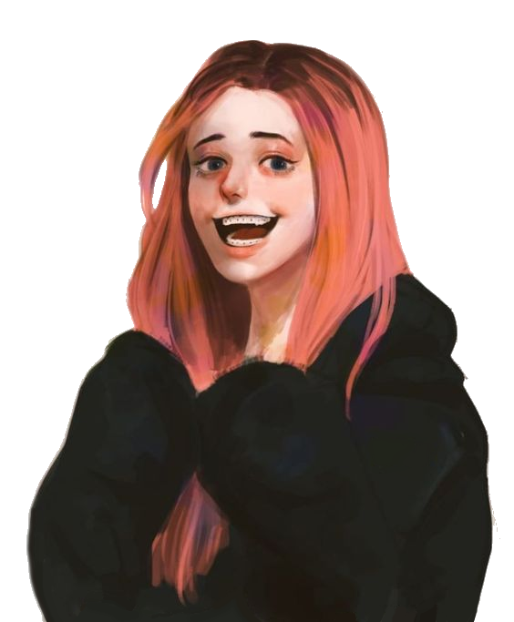

"And when have we ever followed how we're told to act..? We're Legion, we're rebels, we go against what we're told and do what we want... feel how we feel."
Title: The Soldier of Mayhem
Full Name: Julie Kostenko
Nicknames: Jules (Frank /pos) Jules (Parents /derog)
Birthday: Forgotten
Age: 19? (They lost track from the years in the realm)
Race: Werewolf
Height: 5'7" Maybe
Status: Alive
Job: Full Time Leader of Legion, Part time Station Mechanic
Affiliations: Legion (Duh)
Early Life
Ever since she was born, her parents have been trying to raise her to be the "Perfect Daughter". Constant flash cards, classical music, these would eventually devolve even further as she grew up as her parents dictated almost every aspect of her life, including what classes she took, what she ate, what she did at home which mostly consistent of many tutoring sessions, even on the weekends.
It wasn't until she had a particular tutor who cared deeply for Julie and encouraged her to express herself that Julie finally had a taste of that freedom she never knew she could have. This small taste eventually spiraled downhill as Julie became more and more confident in herself in fighting back against her parent's wishes until they finally had enough, firing the tutor and doubling down on all lessons which were now personally monitored by her Father, slowly draining any sign of hope or thoughts of freedom from her mind as the years of endless training took their toll on her.
Current Life
Having finally broken free from both the chains of her family, and the chains of the Entity, Julie finds herself supporting and leading Legion through life while also trying to figure out what she wants for herself as well as Frank, mainly helping him out with his own issues
Personality
Julie maintains a strong willed mind who knows what she wants, and will stop at nothing to get it by using her cunning wit and charm. She occasionally finds joy in messing with people's heads or tricking them for freebies, despite being aware that it could all go wrong in a moment, she's ready to take on whatever life throws at her.
Skills
Great leadership skills, many hidden talents as a result of all the random classes she took during her childhood, as well as many normal talents from rigorous training
Strengths
A strong physique she's built up over her life empowered by her werewolf genetics, very influential/charming if she needs to, capable fighter especially with a knife
Weaknesses
Being reminded of people's influence over her can overwhelm her, a lot of pent up hatred and anger that has been boiling for the past all her life
Hobbies
Any creative outlet, notably in the artistic department of crafts, painting, and the guitar.
Loves
Freedom of Expression, Frankie, Scruffy, Landon
Likes
Tagging, Sketching, Teasing Joey and Susie, getting high
Dislikes
Sheeple, People who are so high and mighty, reflecting on herself
Hates
The Entity, Freddy, Her parents, Reminiscing about her childhood, being/feeling confined
Physical Looks
Blonde hair that's swept over to one side with brownish green eyes, white grrrl, taller than Frank
Clothes
Red flannel jacket with rolled up sleeves, black tank top underneath with jeans and combat boots. Her mask consists of a red x plastered over the mouth and blood seeping down the top
"Frankie, I'll always love you. Even though you frustrate me sometimes when you're acting all hard headed.. I still love you with all my heart."
Status: Lovingly together, a couple that killed together stays together
How they met: They met in a diner by chance when he went up to talk to her, the rest is history.
Personal Sentiments: When everything she knew about her life starts to crumble around her, there's one thing that's certain she knows of and that she will always Frank no matter what mistakes either of them makes.
Extras: She's the true leader of Legion and the not so secret dominant one in the relationshp
"They're our boys.. and don't you let them forget it.. we rule... and boys?"
Status: Best friends
How they met: They met... in a secret way that hasn't been revealed yet.
Personal Sentiments: Julie does her best to look out for her and Joey, even if the two's childish nature can easily get on her nerves, she has her back and supports her wholeheartedly, wanting the best for her.
Extras: She still will not admit that the kids show about pigs she watches all the time is at least somewhat funny.
"Look maybe I am jealous that you guys get to act all carefree and live out that childhood we never had, alright?"
Status: Best friends
How they met: Met Joey via proxy through Susie
Personal Sentiments: While Joey doesn't always match the hardcore appearance he puts up, Julie still has his back through and thin if things get bad
Extras: She often jokes that she's slept with Joey at one point in time

"Landon? Yeah he's a bit dense but, he's our boy, he's one of us, yknow?"
Status: Friends(?)
How they met: They first met in the realm at the lodge as Landon kinda instantly clicked with them
Personal Sentiments: Despite how much of a dolt Landon is, she still considers him one of their own and looks out for him as such.
Extras: Her and Frank often lets Landon join them for fun in the rare occasions he's around
"I don't even know what I'm lying about anymore, she's probably messing with my head.. or maybe she always has been in my head all this time.. maybe she let us fight.. maybe she's been in charge of my parents all this time.."
Status: Immortal Enemies
How they met: "Met" when Legion first arrived in the realm with the Entity feeding into their mindless desires of murder and freedom
Personal Sentiments: Dreams about beating her up in some of the most gruesome ways she can imagine
Extras: Who am I Frank?
- One of my most favorite characters to play